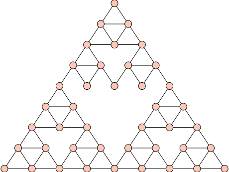

Returns the perfectly balanced tree of height \(h \geq 1\),
whose root has degree \(r \geq 2\).
The number of vertices of this graph is
\(1 + r + r^2 + \cdots + r^h\), that is,
\(\frac{r^{h+1} - 1}{r - 1}\). The number of edges is one
less than the number of vertices.
INPUT:
r – positive integer \(\geq 2\). The degree of the root node.
h – positive integer \(\geq 1\). The height of the balanced tree.
OUTPUT:
The perfectly balanced tree of height \(h \geq 1\) and whose root has
degree \(r \geq 2\). A NetworkXError is returned if \(r < 2\) or
\(h < 1\).
Returns a barbell graph with 2*n1+n2 nodes. The argument n1
must be greater than or equal to 2.
A barbell graph is a basic structure that consists of a path graph
of order n2 connecting two complete graphs of order n1 each.
INPUT:
n1 – integer \(\geq 2\). The order of each of the two
complete graphs.
n2 – nonnegative integer. The order of the path graph
connecting the two complete graphs.
OUTPUT:
A barbell graph of order 2*n1+n2. A ValueError is
returned if n1<2 or n2<0.
PLOTTING:
Upon construction, the position dictionary is filled to
override the spring-layout algorithm. By convention, each barbell
graph will be displayed with the two complete graphs in the
lower-left and upper-right corners, with the path graph connecting
diagonally between the two. Thus the n1-th node will be drawn at a
45 degree angle from the horizontal right center of the first
complete graph, and the n1+n2+1-th node will be drawn 45
degrees below the left horizontal center of the second complete graph.
EXAMPLES:
Construct and show a barbell graph Bar=4, Bells=9:
sage: g=graphs.BarbellGraph(9,4);gBarbell graph: Graph on 22 verticessage: g.show()# long time
An n1>=2, n2>=0 barbell graph has order 2*n1+n2. It
has the complete graph on n1 vertices as a subgraph. It also has
the path graph on n2 vertices as a subgraph.
The vertices of the bubble sort graph are the set of permutations
on \(n\) symbols. Two vertices are adjacent if one can be obtained
from the other by swapping the labels in the \(i\)-th and \((i+1)\)-th
positions for \(1 \leq i \leq n-1\). In total, \(B(n)\) has order
\(n!\). Swapping two labels as described previously corresponds to
multiplying on the right the permutation corresponding to the node
by an elementary transposition in the
SymmetricGroup.
The bubble sort graph is the underlying graph of the
permutahedron().
INPUT:
n – positive integer. The number of symbols to permute.
OUTPUT:
The bubble sort graph \(B(n)\) on \(n\) symbols. If \(n < 1\), a
ValueError is returned.
EXAMPLES:
sage: g=graphs.BubbleSortGraph(4);gBubble sort: Graph on 24 verticessage: g.plot()# long timeGraphics object consisting of 61 graphics primitives
The bubble sort graph on \(n = 1\) symbol is the trivial graph \(K_1\):
sage: graphs.BubbleSortGraph(1)Bubble sort: Graph on 1 vertex
If \(n \geq 1\), then the order of \(B(n)\) is \(n!\):
Return the a Cai-Furer-Immerman graph from \(G\), possibly a twisted
one, and a partition of its nodes.
A Cai-Furer-Immerman graph from/on \(G\) is a graph created by
applying the transformation described in [CFI1992] on a graph
\(G\), that is substituting every vertex v in \(G\) with a
Furer gadget \(F(v)\) of order d equal to the degree of the vertex,
and then substituting every edge \((v,u)\) in \(G\)
with a pair of edges, one connecting the two “a” nodes of
\(F(v)\) and \(F(u)\) and the other their two “b” nodes.
The returned coloring of the vertices is made by the union of the
colorings of each single Furer gadget, individualised for each
vertex of \(G\).
To understand better what these “a” and “b” nodes are, see the
documentation on Furer gadgets.
Furthermore, this method can apply what is described in the paper
mentioned above as a “twist” on an edge, that is taking only one of
the pairs of edges introduced in the new graph and swap two of their
extremes, making each edge go from an “a” node to a “b” node.
This is only doable if the original graph G is connected.
A CaiFurerImmerman graph on a graph with no balanced vertex
separators smaller than s and its twisted version
cannot be distinguished by k-WL for any k < s.
INPUT:
G – An undirected graph on which to construct the
Cai-Furer-Immerman graph
twisted – A boolean indicating if the version to construct
is a twisted one or not
OUTPUT:
H – The Cai-Furer-Immerman graph on G
coloring – A list of list of vertices, representing the
partition induced by the coloring on H
EXAMPLES:
CaiFurerImmerman graph with no balanced vertex separator smaller
than 2
A circulant graph has the property that the vertex \(i\) is connected
with the vertices \(i+j\) and \(i-j\) for each j in adjacency.
INPUT:
n - number of vertices in the graph
adjacency - the list of j values
PLOTTING: Upon construction, the position dictionary is filled to
override the spring-layout algorithm. By convention, each circulant
graph will be displayed with the first (0) node at the top, with
the rest following in a counterclockwise manner.
Filling the position dictionary in advance adds O(n) to the
constructor.
EXAMPLES: Compare plotting using the predefined layout and
networkx:
sage: importnetworkxsage: n=networkx.cycle_graph(23)sage: spring23=Graph(n)sage: posdict23=graphs.CirculantGraph(23,2)sage: spring23.show()# long timesage: posdict23.show()# long time
We next view many cycle graphs as a Sage graphics array. First we
use the CirculantGraph constructor, which fills in
the position dictionary:
sage: g=[]sage: j=[]sage: foriinrange(9):....: k=graphs.CirculantGraph(i+4,i+1)....: g.append(k)sage: foriinrange(3):....: n=[]....: forminrange(3):....: n.append(g[3*i+m].plot(vertex_size=50,vertex_labels=False))....: j.append(n)sage: G=graphics_array(j)sage: G.show()# long time
Compare to plotting with the spring-layout algorithm:
sage: g=[]sage: j=[]sage: foriinrange(9):....: spr=networkx.cycle_graph(i+3)....: k=Graph(spr)....: g.append(k)sage: foriinrange(3):....: n=[]....: forminrange(3):....: n.append(g[3*i+m].plot(vertex_size=50,vertex_labels=False))....: j.append(n)sage: G=graphics_array(j)sage: G.show()# long time
Return the cube-connected cycle of dimension \(d\).
The cube-connected cycle of order \(d\) is the \(d\)-dimensional hypercube
with each of its vertices replaced by a cycle of length \(d\). This graph has
order \(d \times 2^d\).
The construction is as follows:
Construct vertex \((x,y)\) for \(0 \leq x < 2^d\), \(0 \leq y < d\).
For each vertex, \((x,y)\), add an edge between it and \((x, (y-1) \mod d))\),
\((x,(y+1) \mod d)\), and \((x \oplus 2^y, y)\), where \(\oplus\) is the bitwise
xor operator.
For \(d=1\) and \(2\), the cube-connected cycle graph contains self-loops or
multiple edges between a pair of vertices, but for all other \(d\), it is
simple.
INPUT:
d – The dimension of the desired hypercube as well as the length
of the cycle to be placed at each vertex of the \(d\)-dimensional
hypercube. \(d\) must be a positive integer.
Return the \(n\)-cube graph, also called the hypercube in \(n\) dimensions.
The hypercube in \(n\) dimension is build upon the binary strings on \(n\) bits,
two of them being adjacent if they differ in exactly one bit. Hence, the
distance between two vertices in the hypercube is the Hamming distance.
INPUT:
n – integer; the dimension of the cube graph
embedding – integer (default: 1); two embeddings of the \(n\)-cube
are available:
1: the \(n\)-cube is projected inside a regular \(2n\)-gonal polygon by
a skew orthogonal projection. See the Wikipedia article Hypercube for more
details.
2: orthogonal projection of the \(n\)-cube. This orientation shows
columns of independent vertices such that the neighbors of a vertex are
located in the columns on the left and on the right. The number of
vertices in each column represents rows in Pascal’s triangle. See for
instance the Wikipedia article 10-cube for more details.
None or O: no embedding is provided
EXAMPLES:
The distance between \(0100110\) and \(1011010\) is \(5\), as expected:
Plot several \(n\)-cubes in a Sage Graphics Array:
sage: g=[]sage: j=[]sage: foriinrange(6):....: k=graphs.CubeGraph(i+1)....: g.append(k)...sage: foriinrange(2):....: n=[]....: forminrange(3):....: n.append(g[3*i+m].plot(vertex_size=50,vertex_labels=False))....: j.append(n)...sage: G=graphics_array(j)sage: G.show(figsize=[6,4])# long time
Use the plot options to display larger \(n\)-cubes:
sage: g=graphs.CubeGraph(9,embedding=1)sage: g.show(figsize=[12,12],vertex_labels=False,vertex_size=20)# long timesage: g=graphs.CubeGraph(9,embedding=2)sage: g.show(figsize=[12,12],vertex_labels=False,vertex_size=20)# long time
Return a double generalized Petersen graph with \(4n\) nodes.
The double generalized Petersen graphs is a family of graphs proposed in
[ZF2012] as a variant of generalized Petersen graphs. The variables \(n\),
\(k\) are integers such that \(n > 2\) and \(0 < k \leq \lfloor (n-1) / 2
\rfloor\).
INPUT:
n – the number of nodes is \(4 * n\)
k – integer such that \(0 < k \leq \lfloor (n-1) / 2 \rfloor\)
determining how vertices on second and third inner rims are connected
PLOTTING: Upon construction, the position dictionary is filled to override
the spring-layout algorithm. By convention, the double generalized Petersen
graphs are displayed as 4 cocentric cycles, with the first n nodes drawn on
the outer circle. The first (0) node is drawn at the top of the
outer-circle, moving counterclockwise after that. The second circle is drawn
with the (n)th node at the top, then counterclockwise as well. The tird
cycle is drawn with the (2n)th node at the top, then counterclockwise. And
the fourth cycle is drawn with the (3n)th node at the top, then again
counterclockwise.
EXAMPLES:
When \(n\) is even the resulting graph will be isomorphic to a double
generalized Petersen graph with \(k' = n / 2 - k\):
Return the Egawa graph with parameters \(p\), \(s\).
Egawa graphs are a peculiar family of graphs devised by Yoshimi
Egawa in [Ega1981] .
The Shrikhande graph is a special case of this family of graphs,
with parameters \((1,0)\).
All the graphs in this family are not recognizable by 1-WL
(Weisfeiler Lehamn algorithm of the first order) and 2-WL, that is
their orbits are not correctly returned by k-WL for k lower than 3.
Furthermore, all the graphs in this family are distance-regular, but
they are not distance-transitive if \(p \neq 0\).
The Egawa graph with parameters \((0, s)\) is isomorphic to the
Hamming graph with parameters \((s, 4)\), when the underlying
set of the Hamming graph is \([0,1,2,3]\)
INPUT:
p – power to which the graph named \(Y\) in the reference
provided above will be raised
s – power to which the graph named \(X\) in the reference
Return the graph of the Fibonacci Tree \(F_{i}\) of order \(n\).
The Fibonacci tree \(F_{i}\) is recursively defined as the tree
with a root vertex and two attached child trees \(F_{i-1}\) and
\(F_{i-2}\), where \(F_{1}\) is just one vertex and \(F_{0}\) is empty.
Returns the folded cube graph of order \(2^{n-1}\).
The folded cube graph on \(2^{n-1}\) vertices can be obtained from a cube
graph on \(2^n\) vertices by merging together opposed
vertices. Alternatively, it can be obtained from a cube graph on
\(2^{n-1}\) vertices by adding an edge between opposed vertices. This
second construction is the one produced by this method.
The friendship graph is also known as the Dutch windmill graph. Let
\(C_3\) be the cycle graph on 3 vertices. Then \(F_n\) is constructed by
joining \(n \geq 1\) copies of \(C_3\) at a common vertex. If \(n = 1\),
then \(F_1\) is isomorphic to \(C_3\) (the triangle graph). If \(n = 2\),
then \(F_2\) is the butterfly graph, otherwise known as the bowtie
graph. For more information, see the Wikipedia article Friendship_graph.
INPUT:
n – positive integer; the number of copies of \(C_3\) to use in
constructing \(F_n\).
OUTPUT:
The friendship graph \(F_n\) obtained from \(n\) copies of the cycle
graph \(C_3\).
See also
GraphGenerators.ButterflyGraph()
EXAMPLES:
The first few friendship graphs.
sage: A=[];B=[]sage: foriinrange(9):....: g=graphs.FriendshipGraph(i+1)....: A.append(g)sage: foriinrange(3):....: n=[]....: forjinrange(3):....: n.append(A[3*i+j].plot(vertex_size=20,vertex_labels=False))....: B.append(n)sage: G=graphics_array(B)sage: G.show()# long time
For \(n = 1\), the friendship graph \(F_1\) is isomorphic to the cycle
graph \(C_3\), whose visual representation is a triangle.
sage: G=graphs.FriendshipGraph(1);GFriendship graph: Graph on 3 verticessage: G.show()# long timesage: G.is_isomorphic(graphs.CycleGraph(3))True
For \(n = 2\), the friendship graph \(F_2\) is isomorphic to the
butterfly graph, otherwise known as the bowtie graph.
sage: G=graphs.FriendshipGraph(2);GFriendship graph: Graph on 5 verticessage: G.is_isomorphic(graphs.ButterflyGraph())True
If \(n \geq 2\), then the friendship graph \(F_n\) has \(2n + 1\) vertices
and \(3n\) edges. It has radius 1, diameter 2, girth 3, and
chromatic number 3. Furthermore, \(F_n\) is planar and Eulerian.
Return a Furer gadget of order k and their coloring.
Construct the Furer gadget described in [CFI1992],
a graph composed by a middle layer of \(2^(k-1)\) nodes
and two sets of nodes \((a_0, ... , a_{k-1})\) and
\((b_0, ... , b_{k-1})\).
Each node in the middle is connected to either \(a_i\) or \(b_i\),
for each i in [0,k[.
To read about the complete construction, see [CFI1992].
The returned coloring colors the middle section with one color, and
then each pair \((a_i, b_i)\) with another color.
Since this method is mainly used to create Furer gadgets for the
Cai-Furer-Immerman construction, returning gadgets that don’t
always have the same vertex labels is important, that’s why there is
a parameter to manually set a prefix to be appended to each vertex label.
INPUT:
k – The order of the returned Furer gadget, greater than 0.
prefix – Prefix of to be appended to each vertex label,
so as to individualise the returned Furer gadget.
Must be comparable for equality and hashable.
OUTPUT:
G – The Furer gadget of order k
coloring – A list of list of vertices, representing the
Construct a Fuzzy Ball graph with the integer partition
partition and q extra vertices.
Let \(q\) be an integer and let \(m_1,m_2,...,m_k\) be a set of positive
integers. Let \(n=q+m_1+...+m_k\). The Fuzzy Ball graph with partition
\(m_1,m_2,...,m_k\) and \(q\) extra vertices is the graph constructed from the
graph \(G=K_n\) by attaching, for each \(i=1,2,...,k\), a new vertex \(a_i\) to
\(m_i\) distinct vertices of \(G\).
For given positive integers \(k\) and \(m\) and nonnegative
integer \(q\), the set of graphs FuzzyBallGraph(p,q) for
all partitions \(p\) of \(m\) with \(k\) parts are cospectral with
respect to the normalized Laplacian.
Pick positive integers \(m\) and \(k\) and a nonnegative integer \(q\).
All the FuzzyBallGraphs constructed from partitions of \(m\) with
\(k\) parts should be cospectral with respect to the normalized
Laplacian:
sage: m=4;q=2;k=2sage: g_list=[graphs.FuzzyBallGraph(p,q)forpinPartitions(m,length=k)]sage: set([g.laplacian_matrix(normalized=True,vertices=list(g)).charpoly()forging_list])# long time (7s on sage.math, 2011){x^8 - 8*x^7 + 4079/150*x^6 - 68689/1350*x^5 + 610783/10800*x^4 - 120877/3240*x^3 + 1351/100*x^2 - 931/450*x}
Returns a generalized Petersen graph with \(2n\) nodes. The variables
\(n\), \(k\) are integers such that \(n>2\) and \(0<k\leq\lfloor(n-1)\)/\(2\rfloor\)
For \(k=1\) the result is a graph isomorphic to the circular ladder graph
with the same \(n\). The regular Petersen Graph has \(n=5\) and \(k=2\).
Other named graphs that can be described using this notation include
the Desargues graph and the Möbius-Kantor graph.
INPUT:
n - the number of nodes is \(2*n\).
k - integer \(0<k\leq\lfloor(n-1)\)/\(2\rfloor\). Decides
how inner vertices are connected.
PLOTTING: Upon construction, the position dictionary is filled to
override the spring-layout algorithm. By convention, the generalized
Petersen graphs are displayed as an inner and outer cycle pair, with
the first n nodes drawn on the outer circle. The first (0) node is
drawn at the top of the outer-circle, moving counterclockwise after that.
The inner circle is drawn with the (n)th node at the top, then
counterclockwise as well.
EXAMPLES: For \(k=1\) the resulting graph will be isomorphic to a circular
ladder graph.
Return the generalized Sierpinski graph of \(G\) of dimension \(k\).
Generalized Sierpinski graphs have been introduced in [GKP2011] to
generalize the notion of Sierpinski graphs [KM1997].
Given a graph \(G = (V, E)\) of order \(n\) and a parameter \(k\), the generalized
Sierpinski graph of \(G\) of dimension \(k\), denoted by \(S(G, k)\), can be
constructed recursively from \(G\) as follows. \(S(G, 1)\) is isomorphic to
\(G\). To construct \(S(G, k)\) for \(k > 1\), copy \(n\) times \(S(G, k - 1)\), once
per vertex \(u \in V\), and add \(u\) at the beginning of the labels of each
vertex in the copy of \(S(G, k - 1)\) corresponding to vertex \(u\). Then for
any edge \(\{u, v\} \in E\), add an edge between vertex \((u, v, \ldots, v)\)
and vertex \((v, u, \ldots, u)\).
INPUT:
G – a sage Graph
k – integer; the dimension
stretch – integer (default: None); stretching factor used to
determine the positions of the vertices of the output graph. By default
(None), this value is set to twice the maximum Euclidian distance
between the vertices of \(G\). This parameter is used only when the vertices
of \(G\) have positions.
The generalized Sierpinski graph of dimension \(k\) of any graph \(G\) with \(n\)
vertices and \(m\) edges has \(n^k\) vertices and \(m\sum_{i=0}^{k-1}n^i\) edges:
sage: graphs.GoethalsSeidelGraph(3,3)Graph on 28 verticessage: graphs.GoethalsSeidelGraph(3,3).is_strongly_regular(parameters=True)(28, 15, 6, 10)
sage.graphs.generators.families.HammingGraph(n, q, X=None)#
Returns the Hamming graph with parameters n, q over X.
Hamming graphs are graphs over the cartesian product of n copies
of X, where \(q = |X|\), where the vertices, labelled with the
corresponding tuple in \(X^n\), are connected if the Hamming distance
between their labels is 1. All Hamming graphs are regular,
vertex-transitive and distance-regular.
Hamming graphs with parameters \((1,q)\) represent the complete graph
with q vertices over the set X.
INPUT:
n – power to which X will be raised to provide vertices
for the Hamming graph
q – cardinality of X
X – list of labels representing the vertices of the
underlying graph the Hamming graph will be based on; if
None (or left unused), the list \([0, ... , q-1]\)
will be used
OUTPUT:
G – The Hamming graph with parameters \((n,q,X)\)
EXAMPLES:
Every Hamming graph is distance-regular, regular and
vertex-transitive.
Returns the graph whose vertices are the states of the
Tower of Hanoi puzzle, with edges representing legal moves between states.
INPUT:
pegs - the number of pegs in the puzzle, 2 or greater
disks - the number of disks in the puzzle, 1 or greater
labels - default: True, if True the graph contains
more meaningful labels, see explanation below. For large instances,
turn off labels for much faster creation of the graph.
positions - default: True, if True the graph contains
layout information. This creates a planar layout for the case
of three pegs. For large instances, turn off layout information
for much faster creation of the graph.
OUTPUT:
The Tower of Hanoi puzzle has a certain number of identical pegs
and a certain number of disks, each of a different radius.
Initially the disks are all on a single peg, arranged
in order of their radii, with the largest on the bottom.
The goal of the puzzle is to move the disks to any other peg,
arranged in the same order. The one constraint is that the
disks resident on any one peg must always be arranged with larger
radii lower down.
The vertices of this graph represent all the possible states
of this puzzle. Each state of the puzzle is a tuple with length
equal to the number of disks, ordered by largest disk first.
The entry of the tuple is the peg where that disk resides.
Since disks on a given peg must go down in size as we go
up the peg, this totally describes the state of the puzzle.
For example (2,0,0) means the large disk is on peg 2, the
medium disk is on peg 0, and the small disk is on peg 0
(and we know the small disk must be above the medium disk).
We encode these tuples as integers with a base equal to
the number of pegs, and low-order digits to the right.
Two vertices are adjacent if we can change the puzzle from
one state to the other by moving a single disk. For example,
(2,0,0) is adjacent to (2,0,1) since we can move
the small disk off peg 0 and onto (the empty) peg 1.
So the solution to a 3-disk puzzle (with at least
two pegs) can be expressed by the shortest path between
(0,0,0) and (1,1,1). For more on this representation
of the graph, or its properties, see [AD2010].
For greatest speed we create graphs with integer vertices,
where we encode the tuples as integers with a base equal
to the number of pegs, and low-order digits to the right.
So for example, in a 3-peg puzzle with 5 disks, the
state (1,2,0,1,1) is encoded as
\(1\ast 3^4 + 2\ast 3^3 + 0\ast 3^2 + 1\ast 3^1 + 1\ast 3^0 = 139\).
For smaller graphs, the labels that are the tuples are informative,
but slow down creation of the graph. Likewise computing layout
information also incurs a significant speed penalty. For maximum
speed, turn off labels and layout and decode the
vertices explicitly as needed. The
sage.rings.integer.Integer.digits()
with the padsto option is a quick way to do this, though you
may want to reverse the list that is output.
The layout computed when positions=True will
look especially good for the three-peg case, when the graph is known
to be planar. Except for two small cases on 4 pegs, the graph is
otherwise not planar, and likely there is a better way to layout
the vertices.
EXAMPLES:
A classic puzzle uses 3 pegs. We solve the 5 disk puzzle using
integer labels and report the minimum number of moves required.
Note that \(3^5-1\) is the state where all 5 disks
are on peg 2.
Returns the Harary graph on \(n\) vertices and connectivity \(k\), where
\(2 \leq k < n\).
A \(k\)-connected graph \(G\) on \(n\) vertices requires the minimum degree
\(\delta(G)\geq k\), so the minimum number of edges \(G\) should have is
\(\lceil kn/2\rceil\). Harary graphs achieve this lower bound, that is,
Harary graphs are minimal \(k\)-connected graphs on \(n\) vertices.
The construction provided uses the method CirculantGraph. For more
details, see the book D. B. West, Introduction to Graph Theory, 2nd
Edition, Prentice Hall, 2001, p. 150–151; or the MathWorld article on
Harary graphs.
The vertices of the hyper-star graph are the set of binary strings of length
\(n\) which contain \(k\) 1s. Two vertices, \(u\) and \(v\), are adjacent only if
\(u\) can be obtained from \(v\) by swapping the first bit with a different
symbol in another position. For instance, vertex '011100' of \(HS(6, 3)\)
is adjacent to vertices '101100', '110100' and '111000'.
See [LKOL2002] for more details.
INPUT:
n – non-negative integer; length of the binary strings
k – non-negative integer; number of 1s per binary string
EXAMPLES:
sage: g=graphs.HyperStarGraph(6,3)sage: sorted(g.neighbors('011100'))['101100', '110100', '111000']sage: g.plot()# long timeGraphics object consisting of 51 graphics primitives
The I-Graph family as been proposed in [BCMS1988] as a generalization of
the generalized Petersen graphs. The variables \(n\), \(j\), \(k\) are integers
such that \(n > 2\) and \(0 < j, k \leq \lfloor (n - 1) / 2 \rfloor\).
When \(j = 1\) the resulting graph is isomorphic to the generalized Petersen
graph with the same \(n\) and \(k\).
INPUT:
n – the number of nodes is \(2 * n\)
j – integer such that \(0 < j \leq \lfloor (n-1) / 2 \rfloor\)
determining how outer vertices are connected
k – integer such that \(0 < k \leq \lfloor (n-1) / 2 \rfloor\)
determining how inner vertices are connected
PLOTTING: Upon construction, the position dictionary is filled to override
the spring-layout algorithm. By convention, the I-graphs are displayed as an
inner and outer cycle pair, with the first n nodes drawn on the outer
circle. The first (0) node is drawn at the top of the outer-circle, moving
counterclockwise after that. The inner circle is drawn with the (n)th node
at the top, then counterclockwise as well.
EXAMPLES:
When \(j = 1\) the resulting graph will be isomorphic to a generalized
Petersen graph:
Returns the Johnson graph with parameters \(n, k\).
Johnson graphs are a special class of undirected graphs defined from systems
of sets. The vertices of the Johnson graph \(J(n,k)\) are the \(k\)-element
subsets of an \(n\)-element set; two vertices are adjacent when they meet in a
\((k-1)\)-element set. See the Wikipedia article Johnson_graph for more
information.
The complement of the Johnson graph \(J(n,2)\) is isomorphic to the Kneser
Graph \(K(n,2)\). In particular the complement of \(J(5,2)\) is isomorphic to
the Petersen graph.:
Returns the Kneser Graph with parameters \(n, k\).
The Kneser Graph with parameters \(n,k\) is the graph
whose vertices are the \(k\)-subsets of \([0,1,\dots,n-1]\), and such
that two vertices are adjacent if their corresponding sets
are disjoint.
For example, the Petersen Graph can be defined
as the Kneser Graph with parameters \(5,2\).
LCF (Lederberg-Coxeter-Fruchte) notation is a concise way of
describing cubic Hamiltonian graphs. The way a graph is constructed
is as follows. Since there is a Hamiltonian cycle, we first create
a cycle on n nodes. The variable shift_list = [s_0, s_1, …,
s_k-1] describes edges to be created by the following scheme: for
each i, connect vertex i to vertex (i + s_i). Then, repeats
specifies the number of times to repeat this process, where on the
jth repeat we connect vertex (i + j*len(shift_list)) to vertex (
i + j*len(shift_list) + s_i).
INPUT:
n - the number of nodes.
shift_list - a list of integer shifts mod n.
repeats - the number of times to repeat the
process.
PLOTTING: LCF Graphs are plotted as an n-cycle with edges in the
middle, as described above.
REFERENCES:
[1] Frucht, R. “A Canonical Representation of Trivalent
Hamiltonian Graphs.” J. Graph Th. 1, 45-60, 1976.
[2] Grunbaum, B. Convex Polytope es. New York: Wiley,
pp. 362-364, 1967.
[3] Lederberg, J. ‘DENDRAL-64: A System for Computer
Construction, Enumeration and Notation of Organic Molecules
as Tree Structures and Cyclic Graphs. Part II. Topology of
Cyclic Graphs.’ Interim Report to the National Aeronautics
and Space Administration. Grant NsG 81-60. December 15,
1965. http://profiles.nlm.nih.gov/BB/A/B/I/U/_/bbabiu.pdf.
A lollipop graph is a path graph (order n2) connected to a complete
graph (order n1). (A barbell graph minus one of the bells).
PLOTTING: Upon construction, the position dictionary is filled to
override the spring-layout algorithm. By convention, the complete
graph will be drawn in the lower-left corner with the (n1)th node
at a 45 degree angle above the right horizontal center of the
complete graph, leading directly into the path graph.
EXAMPLES:
Construct and show a lollipop graph Candy = 13, Stick = 4:
sage: g=graphs.LollipopGraph(13,4);gLollipop graph: Graph on 17 verticessage: g.show()# long time
Return a strongly regular graph on \((4t+1)(4t-1)^2\) vertices from
[Mat1978].
Let \(4t-1\) be a prime power, and \(4t+1\) be such that there exists
a strongly regular graph \(G\) with parameters \((4t+1,2t,t-1,t)\). In
particular, \(4t+1\) must be a sum of two squares [Mat1978]. With
this input, Mathon [Mat1978] gives a construction of a strongly regular
graph with parameters \((4 \mu + 1, 2 \mu, \mu-1, \mu)\), where
\(\mu = t(4t(4t-1)-1)\). The construction is optionally parametrised by an
a skew-symmetric Latin square of order \(4t+1\), with entries in
\(-2t,...,-1,0,1,...,2t\).
Our implementation follows a description given in [ST1981].
INPUT:
t – a positive integer
G – if None (default), try to construct the necessary graph
with parameters \((4t+1,2t,t-1,t)\), otherwise use the user-supplied one,
with vertices labelled from \(0\) to \(4t\).
L – if None (default), construct a necessary skew Latin square,
otherwise use the user-supplied one. Here non-isomorphic Latin squares
– one constructed from \(Z/9Z\), and the other from \((Z/3Z)^2\) –
lead to non-isomorphic graphs.
Return a strongly regular graph of S6 type from [Muz2007] on
\(n^d((n^d-1)/(n-1)+1)\) vertices.
The construction depends upon a number of parameters, two of them, \(n\) and
\(d\), mandatory, and \(\Phi\) and \(\Sigma\) mappings defined in [Muz2007].
These graphs have parameters \((mn^d, n^{d-1}(m-1) - 1,\mu - 2,\mu)\), where
\(\mu=\frac{n^{d-1}-1}{n-1}n^{d-1}\) and \(m:=\frac{n^d-1}{n-1}+1\).
Some details on \(\Phi\) and \(\Sigma\) are as follows. Let \(L\) be the
complete graph on \(M:=\{0,..., m-1\}\) with the matching
\(\{(2i,2i+1) | i=0,...,m/2\}\) removed.
Then one arbitrarily chooses injections \(\Phi_i\)
from the edges of \(L\) on \(i \in M\) into sets of parallel classes of affine
\(d\)-dimensional designs; our implementation uses the designs of hyperplanes
in \(d\)-dimensional affine geometries over \(GF(n)\). Finally, for each edge
\(ij\) of \(L\) one arbitrarily chooses bijections \(\Sigma_{ij}\) between
\(\Phi_i\) and \(\Phi_j\). More details, in particular how these choices lead
to non-isomorphic graphs, are in [Muz2007].
INPUT:
n (integer)– a prime power
d (integer)– must be odd if \(n\) is odd
Phi is an optional parameter of the construction; it must be either
‘fixed’– this will generate fixed default \(\Phi_i\), for \(i \in M\), or
‘random’– \(\Phi_i\) are generated at random, or
A dictionary describing the functions \(\Phi_i\); for \(i \in M\),
Phi[(i, T)] in \(M\), for each edge T of \(L\) on \(i\).
Also, each \(\Phi_i\) must be injective.
Sigma is an optional parameter of the construction; it must be either
‘fixed’– this will generate a fixed default \(\Sigma\), or
‘random’– \(\Sigma\) is generated at random.
verbose (Boolean)– default is False. If True, print progress information
The graph \(M_k\) is triangle-free and has chromatic number
equal to \(k\). These graphs show, constructively, that there
are triangle-free graphs with arbitrarily high chromatic
number.
The Mycielski graphs are built recursively starting with
\(M_0\), an empty graph; \(M_1\), a single vertex graph; and \(M_2\)
is the graph \(K_2\). \(M_{k+1}\) is then built from \(M_k\)
as follows:
If the vertices of \(M_k\) are \(v_1,\ldots,v_n\), then the
vertices of \(M_{k+1}\) are
\(v_1,\ldots,v_n,w_1,\ldots,w_n,z\). Vertices \(v_1,\ldots,v_n\)
induce a copy of \(M_k\). Vertices \(w_1,\ldots,w_n\) are an
independent set. Vertex \(z\) is adjacent to all the
\(w_i\)-vertices. Finally, vertex \(w_i\) is adjacent to vertex
\(v_j\) iff \(v_i\) is adjacent to \(v_j\).
INPUT:
k Number of steps in the construction process.
relabel Relabel the vertices so their names are the integers
range(n) where n is the number of vertices in the graph.
EXAMPLES:
The Mycielski graph \(M_k\) is triangle-free and has chromatic
number equal to \(k\).
The vertices of the (n,k)-star graph are the set of all arrangements of
n symbols into labels of length k. There are two adjacency rules for
the (n,k)-star graph. First, two vertices are adjacent if one can be
obtained from the other by swapping the first symbol with another
symbol. Second, two vertices are adjacent if one can be obtained from
the other by swapping the first symbol with an external symbol (a
symbol not used in the original label).
INPUT:
n
k
EXAMPLES:
sage: g=graphs.NKStarGraph(4,2)sage: g.plot()# long timeGraphics object consisting of 31 graphics primitives
REFERENCES:
Wei-Kuo, Chiang, and Chen Rong-Jaye. “The (n, k)-star graph: A
generalized star graph.” Information Processing Letters 56,
no. 5 (December 8, 1995): 259-264.
The vertices of the n-star graph are the set of permutations on n
symbols. There is an edge between two vertices if their labels differ
only in the first and one other position.
INPUT:
n
EXAMPLES:
sage: g=graphs.NStarGraph(4)sage: g.plot()# long timeGraphics object consisting of 61 graphics primitives
REFERENCES:
S.B. Akers, D. Horel and B. Krishnamurthy, The star graph: An
attractive alternative to the previous n-cube. In: Proc. Internat.
Conf. on Parallel Processing (1987), pp. 393–400.
The Odd Graph with parameter \(n\) is defined as the
Kneser Graph with parameters \(2n-1,n-1\).
Equivalently, the Odd Graph is the graph whose vertices
are the \(n-1\)-subsets of \([0,1,\dots,2(n-1)]\), and such
that two vertices are adjacent if their corresponding sets
are disjoint.
For example, the Petersen Graph can be defined
as the Odd Graph with parameter \(3\).
Pasechnik strongly regular graph on \((4n-1)^2\) vertices
A strongly regular graph with parameters of the orthogonal array graph
OrthogonalArrayBlockGraph(),
also known as pseudo Latin squares graph \(L_{2n-1}(4n-1)\), constructed from
a skew Hadamard matrix of order \(4n\) following [Pas1992].
A ringed tree of level \(k\) is a binary tree with \(k\) levels (counting
the root as a level), in which all vertices at the same level are connected
by a ring.
More precisely, in each layer of the binary tree (i.e. a layer is the set of
vertices \([2^i...2^{i+1}-1]\)) two vertices \(u,v\) are adjacent if \(u=v+1\) or
if \(u=2^i\) and \(v=\).
sage.graphs.generators.families.RoseWindowGraph(n, a, r)#
Return a rose window graph with \(2n\) nodes.
The rose window graphs is a family of tetravalant graphs introduced in
[Wilson2008]. The parameters \(n\), \(a\) and \(r\) are integers such that
\(n > 2\), \(1 \leq a, r < n\), and \(r \neq n / 2\).
INPUT:
n – the number of nodes is \(2 * n\)
a – integer such that \(1 \leq a < n\) determining a-spoke edges
r – integer such that \(1 \leq r < n\) and \(r \neq n / 2\) determining
how inner vertices are connected
PLOTTING: Upon construction, the position dictionary is filled to override
the spring-layout algorithm. By convention, the rose window graphs are
displayed as an inner and outer cycle pair, with the first n nodes drawn on
the outer circle. The first (0) node is drawn at the top of the
outer-circle, moving counterclockwise after that. The inner circle is drawn
with the (n)th node at the top, then counterclockwise as well. Vertices in
the outer circle are connected in the circular manner, vertices in the inner
circle are connected when their label have difference \(r\) (mod n). Vertices
on the outer rim are connected with the vertices on the inner rim when they
are at the same position and when they are \(a\) apart.
EXAMPLES:
The vertices of a rose window graph have all degree 4:
Return the Sierpinski Gasket graph of generation \(n\).
All vertices but 3 have valence 4.
INPUT:
\(n\) – an integer
OUTPUT:
a graph \(S_n\) with \(3 (3^{n-1}+1)/2\) vertices and
\(3^n\) edges, closely related to the famous Sierpinski triangle
fractal.
All these graphs have a triangular shape, and three special
vertices at top, bottom left and bottom right. These are the only
vertices of valence 2, all the other ones having valence 4.
The graph \(S_1\) (generation \(1\)) is a triangle.
The graph \(S_{n+1}\) is obtained from the disjoint union of
three copies A,B,C of \(S_n\) by identifying pairs of vertices:
the top vertex of A with the bottom left vertex of B,
the bottom right vertex of B with the top vertex of C,
and the bottom left vertex of C with the bottom right vertex of A.

See also
HanoiTowerGraph(). There is
another family of graphs called Sierpinski graphs, where all vertices
but 3 have valence 3. They are available using
graphs.HanoiTowerGraph(3,n).
Pseudo-\(OA(2n,4n-1)\)-graph from a skew Hadamard matrix of order \(4n\)
A strongly regular graph with parameters of the orthogonal array graph
OrthogonalArrayBlockGraph(),
also known as pseudo Latin squares graph \(L_{2n}(4n-1)\), constructed from a
skew Hadamard matrix of order \(4n\), due to Goethals and Seidel, see
[BL1984].
A strongly regular graph in Seidel switching class of
\(SquaredSkewHadamardMatrixGraph\)
A strongly regular graph in the Seidelswitching class of the disjoint union of a 1-vertex graph
and the one produced by Pseudo-L_{2n}(4n-1)
In this case, the other possible parameter set of a strongly regular graph
in the Seidel switching class of the latter graph (see [BH2012]) coincides
with the set of parameters of the complement of the graph returned by this
function.
sage.graphs.generators.families.TabacjnGraph(n, a, b, r)#
Return a Tabačjn graph with \(2n\) nodes.
The Tabačjn graphs is a family of pentavalent bicirculants graphs proposed
in [AHKOS2014] as a generalization of generalized Petersen graphs. The
parameters \(n\), \(a\), \(b\), \(r\) are integers such that \(n \geq 3\), \(1 \leq a,
b, r \leq n - 1\), with \(a \neq b\) and \(r \neq n / 2\).
INPUT:
n – the number of nodes is \(2 * n\)
a – integer such that \(0 < a < n\) and \(a \neq b\), that determines
a-spoke edges
b – integer such that \(0 < b < n\) and \(b \neq a\), that determines
b-spoke edges
r – integer such that \(0 < r < n\) and \(r \neq n/2\) determining how
inner vertices are connected
PLOTTING: Upon construction, the position dictionary is filled to override
the spring-layout algorithm. By convention, the rose window graphs are
displayed as an inner and outer cycle pair, with the first n nodes drawn on
the outer circle. The first (0) node is drawn at the top of the
outer-circle, moving counterclockwise after that. The inner circle is drawn
with the (n)th node at the top, then counterclockwise as well. Vertices in
the outer circle are connected in the circular manner, vertices in the inner
circle are connected when their label have difference \(r\) (mod n). Vertices
on the outer rim are connected with the vertices on the inner rim when they
are at the same position and when they are \(a\) and \(b\) apart.
A tadpole graph is a path graph (order n2) connected to a cycle graph
(order n1).
PLOTTING: Upon construction, the position dictionary is filled to override
the spring-layout algorithm. By convention, the cycle graph will be drawn
in the lower-left corner with the (n1)th node at a 45 degree angle above
the right horizontal center of the cycle graph, leading directly into the
path graph.
EXAMPLES:
Construct and show a tadpole graph Cycle = 13, Stick = 4:
sage: g=graphs.TadpoleGraph(13,4);gTadpole graph: Graph on 17 verticessage: g.show()# long time
Turan graphs are complete multipartite graphs with \(n\) vertices and \(r\)
subsets, denoted \(T(n,r)\), with the property that the sizes of the subsets
are as close to equal as possible. The graph \(T(n,r)\) will have \(n \pmod r\)
subsets of size \(\lfloor n/r \rfloor\) and \(r - (n \pmod r)\) subsets of size
\(\lceil n/r \rceil\). See the Wikipedia article Turan_graph for more information.
INPUT:
n – integer; the number of vertices in the graph
r – integer; the number of partitions of the graph
A Wheel graph is a basic structure where one node is connected to all other
nodes and those (outer) nodes are connected cyclically.
PLOTTING: Upon construction, the position dictionary is filled to override
the spring-layout algorithm. By convention, each wheel graph will be
displayed with the first (0) node in the center, the second node at the top,
and the rest following in a counterclockwise manner.
With the wheel graph, we see that it doesn’t take a very large n at all for
the spring-layout to give a counter-intuitive display. (See Graphics Array
examples below).
EXAMPLES:
We view many wheel graphs with a Sage Graphics Array, first with this
constructor (i.e., the position dictionary filled):
sage: g=[]sage: j=[]sage: foriinrange(9):....: k=graphs.WheelGraph(i+3)....: g.append(k)...sage: foriinrange(3):....: n=[]....: forminrange(3):....: n.append(g[3*i+m].plot(vertex_size=50,vertex_labels=False))....: j.append(n)...sage: G=graphics_array(j)sage: G.show()# long time
Next, using the spring-layout algorithm:
sage: importnetworkxsage: g=[]sage: j=[]sage: foriinrange(9):....: spr=networkx.wheel_graph(i+3)....: k=Graph(spr)....: g.append(k)...sage: foriinrange(3):....: n=[]....: forminrange(3):....: n.append(g[3*i+m].plot(vertex_size=50,vertex_labels=False))....: j.append(n)...sage: G=graphics_array(j)sage: G.show()# long time
Compare the plotting:
sage: n=networkx.wheel_graph(23)sage: spring23=Graph(n)sage: posdict23=graphs.WheelGraph(23)sage: spring23.show()# long timesage: posdict23.show()# long time
The windmill graph \(Wd(k, n)\) is an undirected graph constructed for \(k \geq
2\) and \(n \geq 2\) by joining \(n\) copies of the complete graph \(K_k\) at a
shared vertex. It has \((k-1)n+1\) vertices and \(nk(k-1)/2\) edges, girth 3 (if
\(k > 2\)), radius 1 and diameter 2. It has vertex connectivity 1 because its
central vertex is an articulation point; however, like the complete graphs
from which it is formed, it is \((k-1)\)-edge-connected. It is trivially
perfect and a block graph.
The graphs are returned in the ordering given by the Wikipedia
drawing, read from left to right and from top to bottom.
EXAMPLES:
sage: graphs.line_graph_forbidden_subgraphs()[Claw graph: Graph on 4 vertices,Graph on 6 vertices,Graph on 6 vertices,Graph on 5 vertices,Graph on 6 vertices,Graph on 6 vertices,Graph on 6 vertices,Graph on 6 vertices,Graph on 5 vertices]
Return a generator which creates non-isomorphic trees from nauty’s gentreeg
program.
INPUT:
options – string (default: ""); a string passed to gentreeg
as if it was run at a system command line. At a minimum, you must pass
the number of vertices you desire. Sage expects the graphs to be in
nauty’s “sparse6” format, do not set an option to change this default or
results will be unpredictable.
debug – boolean (default: False); if True the first line of
gentreeg’s output to standard error is captured and the first call to
the generator’s next() function will return this line as a string. A
line leading with “>A” indicates a successful initiation of the program
with some information on the arguments, while a line beginning with “>E”
indicates an error with the input.
The possible options, obtained as output of gentreeg-help:
n : the number of vertices. Must be in range 1..128res/mod : only generate subset res out of subsets 0..mod-1 -D<int> : an upper bound for the maximum degree -Z<int>:<int> : bounds on the diameter -q : suppress auxiliary output
Options which cause gentreeg to use an output format different than the
sparse6 format are not listed above (-p, -l, -u) as they will confuse the
creation of a Sage graph. The res/mod option can be useful when using the
output in a routine run several times in parallel.
OUTPUT:
A generator which will produce the graphs as Sage graphs. These will be
simple graphs: no loops, no multiple edges, no directed edges.
The generator can be used to construct trees for testing, one at a time
(usually inside a loop). Or it can be used to create an entire list all at
once if there is sufficient memory to contain it:
sage: gen=graphs.nauty_gentreeg("4")sage: next(gen)Graph on 4 verticessage: next(gen)Graph on 4 verticessage: next(gen)Traceback (most recent call last):...StopIteration
The number of trees on the first few vertex counts. This agrees with
OEIS sequence A000055:
The debug switch can be used to examine gentreeg’s reaction to the
input in the options string. We illustrate success. (A failure will be
a string beginning with “>E”.) Passing the “-q” switch to gentreeg will
suppress the indicator of a successful initiation, and so the first returned
value might be an empty string if debug is True:
The Petersen family is a collection of 7 graphs which are the forbidden
minors of the linklessly embeddable graphs. For more information see the
Wikipedia article Petersen_family.
INPUT:
generate (boolean) – whether to generate the family from the
\(\Delta-Y\) transformations. When set to False (default) a hardcoded
version of the graphs (with a prettier layout) is returned.
EXAMPLES:
sage: graphs.petersen_family()[Petersen graph: Graph on 10 vertices, Complete graph: Graph on 6 vertices, Multipartite Graph with set sizes [3, 3, 1]: Graph on 7 vertices, Graph on 8 vertices, Graph on 9 vertices, Graph on 7 vertices, Graph on 8 vertices]
The two different inputs generate the same graphs:
Returns a generator of the distinct trees on a fixed number of vertices.
INPUT:
vertices - the size of the trees created.
OUTPUT:
A generator which creates an exhaustive, duplicate-free listing
of the connected free (unlabeled) trees with vertices number
of vertices. A tree is a graph with no cycles.
ALGORITHM:
Uses an algorithm that generates each new tree
in constant time. See the documentation for, and implementation
of, the sage.graphs.trees module, including a citation.
EXAMPLES:
We create an iterator, then loop over its elements.